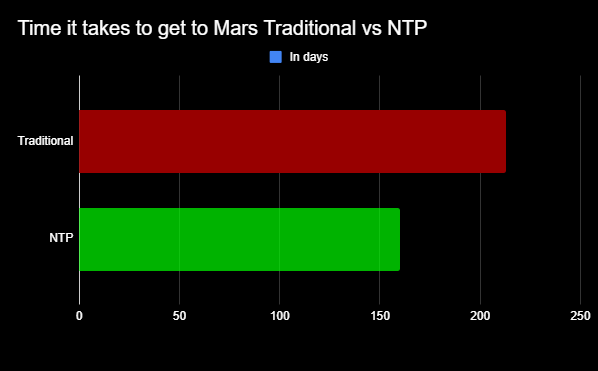

Is Nuclear Propulsion Worth It?
(Nuclear Thermal Propulsion)
Modern Propulsion vs Nuclear Thermal Propulsion
Nuclear thermal propulsion systems are very powerful and moderately efficient especially for the speed.Modern propulsion uses traditional burning fuel rockets, the modern fuel we use does not last as long as nuclear material.
A Thermal nuclear rocket can achieve twice as much as what a fuel powered rocket can in terms of efficiency.
The Propellant of the nuclear thermal propellant rises at a higher temperature which means that the nuclear rocket can travel to half that time on Mars and back if we were to simulate it.
Pro's and Con's of Nuclear
Pro's
- Nuclear propulsion rockets can complete missions with less fuel and time.
- The NTP Rocket systems are powered by fission, which happens when uranium atoms are split apart in the core which releases heat. This heats up the propellant which converts it into gas then expanding through the nozzle making it last longer than an average rocket.
- NTP systems will also provide great flexibility for more intense space missions
- They can also limit the space crew's exposure to radiation while in space. This is the overall time spent in space can be decreases, limiting exposure.
- Lower Mass which can increase efficiency
Gray Area 💀
- NTP systems are not designed to produce the amount of thrust needed to leave the Earth's surface. Though they are able to reduce travel time to mars by up to 25%
Con's
- Expensive for nuclear reactor and poses many questions to the maintanence and danger of the reactor
- If the launch were to fail it would bring consequences to our atmosphere and oceanic life.
- Social issues regarding using nuclear
- Technological advancements have not been made enough in the field to make this style work constantly

Fuel Sustainability
Nuclear reactors are manufactured to where they can operate for longer cycles before refueling which would typically be around every 1.5 - 2 years.
Rocket storage after landing
The rockets built that make use of NTP technology would very likely be very expensive. Because of this it may be necessary for us to store the rockets by being able to land them after the mission and storing them in some sort of facility such as SpaceX does.
Created by Team Morale;Jarrell Sybang, Estevan Martinez, & Alex Palecki